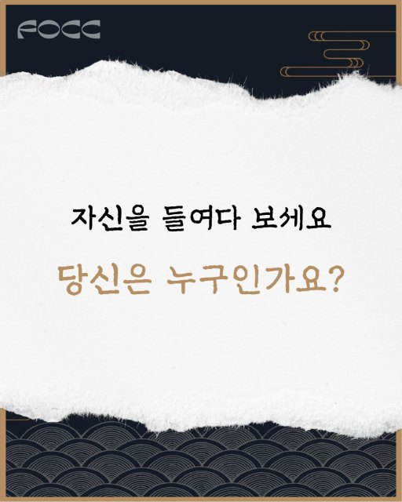
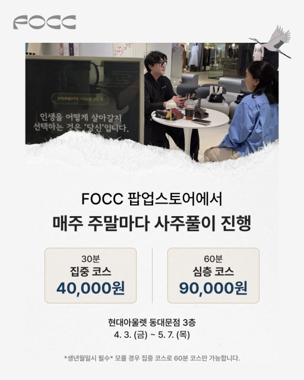
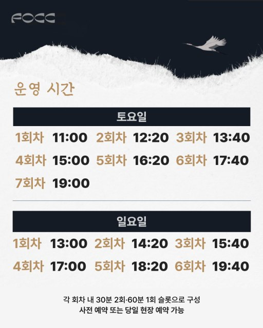

사람이 빠져드는세계관과 첫 화면.
캐릭터와 세계관을 직접 쓰고 AI로 화면까지 만들어 온, 콘텐츠 기획자 서이솔입니다.
캐릭터와 세계관을 직접 쓰고 AI로 화면까지 만들어 온, 콘텐츠 기획자 서이솔입니다.
추리게임 세계관 사이트 2종
인물 파일, 잠긴 휴대폰, 답에 따라 갈리는 입소 검사
후킹을 앞에 두는 숏폼 재구성(1만 회+)
상세페이지·카드뉴스의 순서와 카피
Claude로 사이트와 상세페이지 템플릿을 구현하고, 결과를 검토하며 수정.
서바이벌 프로그램 촬영 중 벌어진 살인 사건의 범인을 찾는 참여형 텍스트 추리 게임의 세계관 사이트.
게임 시작 전 참가자 모집을 위한 세계관 설명용 웹사이트. 실제 프로그램 공식 사이트처럼 제공하여 게임의 세계관을 알리고, 캐릭터 선정과 캐릭터 파일 전달까지 한 사이트에 담음.
가상의 학교를 무대로 한 크라임씬 게임. 학교 홈페이지와 등장인물의 휴대폰을 단서 창구로 만든 작업.
학교 홈페이지: 게임 시작 전 세계관을 알리는 사이트. 배경이 학교라 실제 학교 공식 사이트 UI로 만들고, 가정통신문으로 참여자 접수, 회원가입으로 캐릭터 선정, 로그인으로 캐릭터 파일 전달.
휴대폰: 실제 게임 중 현장 탐사 순서에서 피해자의 휴대폰을 발견하는 장면의 몰입감을 살리기 위해, 실제로 조작할 수 있는 휴대폰을 사이트로 구현해 전달.
팝업스토어 주말 사주풀이 이벤트 홍보 카드뉴스 5장. 표지, 소개, 코스 구성, 회차별 운영 시간, 예약 QR 순서.




팝업스토어 주말 이벤트로 진행한 사주풀이 이벤트의 홍보용 카드뉴스. 이벤트는 5회가량, 현장 예약으로만 운영.
 서이솔디지털 콘텐츠 기획 지원
서이솔디지털 콘텐츠 기획 지원사람이 궁금해서 다음 화면을 열게 만드는 일,
청월당에서 이어 가고 싶습니다.
방송·유튜브 작업까지 담긴 전체 포트폴리오는 여기에 있습니다.